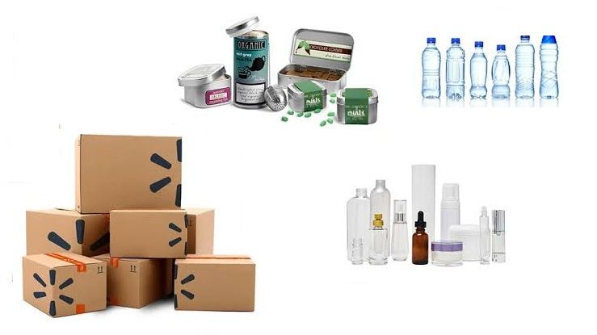
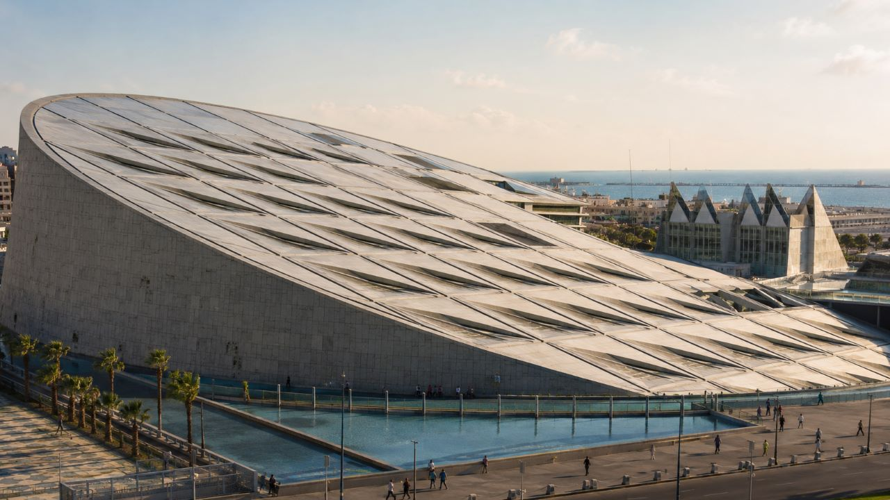

No desenvolvimento de projetos tecnológicos e industriais, o cálculo analítico do volume e da área superficial de corpos tridimensionais é fundamental para o dimensionamento de insumos e a otimização estrutural. Elementos baseados em simetria de revolução — gerados pela rotação de uma curva contínua em torno de um eixo fixo — destacam-se pela eficiência mecânica, distribuição homogênea de tensões e viabilidade de fabricação.
Na concepção de recipientes industrializados (como frascos, garrafas, reservatórios de pressão e tanques de armazenamento), o projeto geométrico exige a determinação rigorosa do volume interno e da quantidade de material empregada na superfície externa. A modelagem matemática por meio de sólidos de revolução permite definir com exatidão a capacidade volumétrica nominal do produto e, simultaneamente, otimizar o consumo de matéria-prima.

Imagem 1: Embalagens e Recipientes IndustrializadosEm projetos arquitetônicos e obras de infraestrutura, superfícies de revolução oferecem elevada resistência mecânica aliada ao apelo estético. Estruturas como cúpulas, abóbadas, silos de armazenamento e torres de resfriamento utilizam a geometria axial para distribuir carregamentos de forma uniforme ao longo da superfície.

Imagem 2: Nova biblioteca de AlexandriaUma das técnicas fundamentais para a determinação de volumes tridimensionais no Cálculo Integral consiste na rotação de uma curva contínua em torno de um eixo de referência. Ao tomar uma região plana limitada pelo gráfico de uma função $y = f(x)$, pelas retas verticais $x = a$ e $x = b$, e pelo eixo das abcissas, e promovendo sua rotação completa ($360^\circ$) em torno do eixo $X$, gera-se um corpo tridimensional denominado sólido de revolução.
Definição: Seja $f:[a,b] \to \mathbb{R}$ uma função contínua e não negativa no intervalo $[a,b]$. O sólido de revolução $B$ é o conjunto de pontos do espaço tridimensional obtido ao girar a região plana $A = \{(x,y) \in \mathbb{R}^2 \mid a \le x \le b, \, 0 \le y \le f(x)\}$ em torno do eixo $X$.
Para determinar a expressão matemática do volume total, aproxima-se o sólido por um conjunto de $n$ discos cilíndricos gerados pela rotação de retângulos sob a curva.
1 Volume do Disco Cilíndrico: O volume de um cilindro reto com área da base $A$ e espessura $h = \Delta x$ é dado por:
$$V = A \cdot h = \pi r^2 \Delta x$$2 Identificação do Raio e Soma de Riemann: Como o raio de cada disco corresponde à altura da função ($r = f(x_i^*)$), somamos o volume de todos os $n$ discos para obter a Soma de Riemann:
$$V_n = \sum_{i=1}^{n} \pi [f(x_i^*)]^2 \Delta x$$3 Passagem ao Limite e Integral Definida: Fazendo o número de discos tender ao infinito ($n \to \infty$), a soma discreta converge exatamente para a integral definida:
$$V = \lim_{n \to \infty} \sum_{i=1}^{n} \pi [f(x_i^*)]^2 \Delta x = \int_{a}^{b} \pi [f(x)]^2 \, dx$$Isolando a constante $\pi$, obtém-se a Fórmula Geral para o Volume do Sólido de Revolução em Torno do Eixo X:
Mostre que o volume de uma esfera de raio $r$ é $V = \frac{4}{3}\pi r^3$.
1. Modelagem Geométrica: Uma esfera de raio $r$ é obtida girando a região limitada pela semicircunferência $y = \sqrt{r^2 - x^2}$ e o eixo $X$, no intervalo $-r \le x \le r$, em torno do eixo $X$.
2. Aplicação da Fórmula do Volume:
$$V = \pi \int_{-r}^{r} [f(x)]^2 \, dx = \pi \int_{-r}^{r} \left(\sqrt{r^2 - x^2}\right)^2 \, dx = \pi \int_{-r}^{r} (r^2 - x^2) \, dx$$3. Aproveitando a Simetria do Integrando: Como $r^2 - x^2$ é uma função par:
$$V = 2\pi \int_{0}^{r} (r^2 - x^2) \, dx$$4. Integração Definida:
$$V = 2\pi \left[ r^2 x - \frac{x^3}{3} \right]_0^r = 2\pi \left( r^3 - \frac{r^3}{3} \right) = 2\pi \left( \frac{2r^3}{3} \right) = \frac{4}{3}\pi r^3$$Encontre o volume do sólido obtido pela rotação em torno do eixo $x$ da região sob a curva $y = \sqrt{x}$ de $0$ a $1$. Ilustre a definição de volume esboçando um cilindro aproximante típico.
1. Identificação da Função e Limites: O sólido é gerado girando $y = \sqrt{x}$ entre $x = 0$ e $x = 1$ em torno do eixo $X$.
2. Área da Seção Transversal: Cada disco transversal na posição $x$ possui raio $r = \sqrt{x}$. Sua área é:
$$A(x) = \pi r^2 = \pi (\sqrt{x})^2 = \pi x$$3. Integração Definida:
$$V = \int_{0}^{1} A(x) \, dx = \pi \int_{0}^{1} x \, dx = \pi \left[ \frac{x^2}{2} \right]_0^1 = \pi \left( \frac{1}{2} - 0 \right) = \frac{\pi}{2}$$Encontre o volume do sólido obtido pela rotação da região delimitada por $y = x^3$, $y = 8$ e $x = 0$ em torno do eixo $y$.
1. Mudança de Variável: Como a rotação é efetuada em torno do eixo $Y$, as seções transversais são discos horizontais de espessura $dy$. Expressamos $x$ em função de $y$:
$$y = x^3 \implies x = \sqrt[3]{y} = y^{1/3}$$2. Identificação do Raio e Limites: O raio do disco na altura $y$ é $r(y) = y^{1/3}$, e a variável $y$ varia de $0$ a $8$.
3. Integral do Volume:
$$V = \pi \int_{0}^{8} [r(y)]^2 \, dy = \pi \int_{0}^{8} (y^{1/3})^2 \, dy = \pi \int_{0}^{8} y^{2/3} \, dy$$ $$V = \pi \left[ \frac{y^{5/3}}{5/3} \right]_0^8 = \frac{3\pi}{5} \left( 8^{5/3} \right) = \frac{3\pi}{5} (32) = \frac{96\pi}{5}$$A região $\mathscr{R}$, delimitada pelas curvas $y = x$ e $y = x^2$, é girada ao redor do eixo $x$. Encontre o volume do sólido resultante.
1. Intersecção das Curvas e Limites: Igualando $y = x$ e $y = x^2$, obtemos $x = x^2 \implies x^2 - x = 0 \implies x(x - 1) = 0$. Os pontos de intersecção são $x = 0$ e $x = 1$. No intervalo $[0, 1]$, a reta $y = x$ fica acima da parábola $y = x^2$.
2. Raios Externo e Interno (Método das Arruelas): Como a região é girada em torno do eixo $X$, a seção transversal perpendicular ao eixo de rotação é uma arruela (anel) com:
3. Área da Seção Transversal:
$$A(x) = \pi [R(x)]^2 - \pi [r(x)]^2 = \pi \left( x^2 - (x^2)^2 \right) = \pi (x^2 - x^4)$$4. Integração Definida:
$$V = \int_{0}^{1} A(x) \, dx = \pi \int_{0}^{1} (x^2 - x^4) \, dx = \pi \left[ \frac{x^3}{3} - \frac{x^5}{5} \right]_0^1 = \pi \left( \frac{1}{3} - \frac{1}{5} \right) = \frac{2\pi}{15}$$Encontre o volume do sólido obtido pela rotação da região no Exemplo 4 em torno da reta $y = 2$.
1. Identificação do Eixo de Rotação e Raios: A região gira em torno da reta horizontal $y = 2$. A distância das curvas até a reta $y = 2$ define os raios externo e interno da arruela:
2. Área da Seção Transversal:
$$A(x) = \pi [R(x)]^2 - \pi [r(x)]^2 = \pi \left[ (2 - x^2)^2 - (2 - x)^2 \right]$$ $$A(x) = \pi \left[ (4 - 4x^2 + x^4) - (4 - 4x + x^2) \right] = \pi (x^4 - 5x^2 + 4x)$$3. Integração Definida:
$$V = \int_{0}^{1} A(x) \, dx = \pi \int_{0}^{1} (x^4 - 5x^2 + 4x) \, dx = \pi \left[ \frac{x^5}{5} - \frac{5x^3}{3} + 2x^2 \right]_0^1$$ $$V = \pi \left( \frac{1}{5} - \frac{5}{3} + 2 \right) = \pi \left( \frac{3 - 25 + 30}{15} \right) = \frac{8\pi}{15}$$Acesse a lista de exercícios referente ao cálculo de volume e superfícies de revolução.
📋 Acessar Lista de Exercícios (Lista 4)